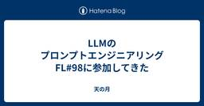
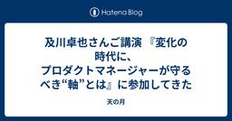
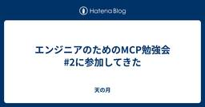
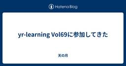
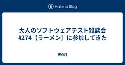
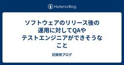
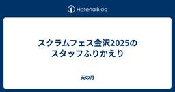
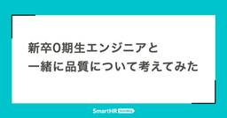
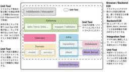
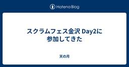

直近1週間の更新
6/22 (日)

LLMのプロンプトエンジニアリング FL#98に参加してきた 天の月
LLMのプロンプトエンジニアリング FL#98 - connpass こちらのイベントに参加してきたので、会の様子と感想を書いていこうと思います。 会の概要 会の様子 講演 パネルトーク AI系のプロジェクトで楽しかったことは？ これからのエンジニアに必要な能力は？ 書籍にアップデートしたい情報は？ Q&A システムプロンプトはデグレの可能性もあると思うが、コードの改修で済むならコードの改修を優先すべきか？ 評価の自動化はできるのか？ MCP流行の理由は？ Geminiでは大量のプロンプトを入れても問題なく処理できるようになっているが、どう考えているのか？ GitHub Copilot Age…
9分前
6/21 (土)

及川卓也さんご講演 『変化の時代に、プロダクトマネージャーが守るべき“軸”とは』に参加してきた 天の月
findy.connpass.com こちらのイベントに参加してきたので、会の様子と感想を書いていこうと思います。 会の概要 会の様子 及川さんの講演 Q&A ソフトウェアファーストで「これは考えていなかった」というのはあるか？ 役員が流行を取り入れたがるときにどう組織を守るべきか？ 及川さんのメンターはいるのか？ 生成AIが出ているなかWF開発は適さないのか？ 顧客体験を向上させるようなフロントエンドは不要か？ SaaSがAI時代になったとき、誰がAIの餌代を払うようになるか？ データの重要性は増えていくと思うがそれを踏まえた変化はどのようなことが考えられるか？ 会全体を通した感想 会の概要…
11分前
なぜ「創造性と共感」が注目されるのか？ つーつー
出かける際はコンビニを経由しながら、ゆっくりと目的地に向かう、QAエンジニアのつーつーです😁前回は、生成AIが進化する時代にどんな仕事が人間に残るのか？というテーマでお話ししました。今回はその中でも「創造性と共感」が求められる仕事にフォーカスしてみたいと思います！続きをみる
8時間前
QA to AQに挑戦するチームの話 Zennの「QA」のフィード
はじめにとにもかくにも、QA to AQを読みましょう。https://www.shoeisha.co.jp/book/detail/9784798179322この記事はスプリントの頭では開発者が開発し、スプリントの終わりにQAがテストをする品質保証はQAがテスト実施で担保してくれる自動テストはとりあえずカバレッジを上げるためそんなチームの開発とQAの障壁の解体について実践している内容の備忘録です。まだまだ試行錯誤中ですが、今までに得られた変化と実践について振り返りも兼ねて記録しています。 QAtoAQを元にした取り組み機能開発が進む一方で、テストサイクルの...
12時間前

Ranorex APIを使用したメールアドレステストデータの作成 Ranorex Blog - UIテスト自動化ツール Ranorex
Ranorexは、Web、モバイル、デスクトップアプリケーションのテストを自動化できるノーコードツールです。更にRanorex APIを使用してC#またはVB.NETでコードモジュールを作成することができ、テストスイート […]The post Ranorex APIを使用したメールアドレステストデータの作成 first appeared on UIテスト自動化ツール Ranorex.
13時間前
6/20 (金)
VRTのブレに立ち向かう Zennの「Test」のフィード
こんにちは Social PLUS のフロントエンドエンジニアのまっくすです。弊社の開発環境の課題であった「VRTのブレ」に立ち向かった話を共有したいと思います。Storybook v6＋Storycap 環境で頻発していた VRT のブレに対してMSW でダミー画像をモック化storycap から storycap-testrun への移行で対策しました。撮影時間はやや伸びましたが、レビュー負荷が大幅に下がり、開発者体験が確実に向上したので、その手順とポイントを共有します。私たちと同様に、VRTのブレの悩みを少しでも解消することができれば幸いです！ 用語の整理...
1日前
【メディア掲載】本当に価値あるITシステムの条件とは？ 第三者検証のスペシャリスト、ポールトゥウィンが語る PTW／ポールトゥウィン【公式】
「ITmedia」での連載第3回目は、システムにとっての「品質」とは何か？QA事業の本質を探るテーマについて、ポールトゥウィンの執行役員営業本部長 富塚香とQAソリューション事業部 シニアマネージャーの木川広基がインタビューに応えています。例えば外食産業のように競合ひしめく業界においては、他社に先駆けて少しでも早く新しいシステムを導入したいというニーズから「価格」「納期」が優先されるケースも少なくありません。「品質」を後回しにした結果、障害が発生すればビジネスそのものが停止してしまうリスクもあります。こうした意識の問題について、富塚は次のように現状を分析しています。続きをみる
1日前
【メディア掲載】なぜポールトゥウィンはAI専門組織を立ち上げたのか？ エージェンティックAIが導く「テスト自動化」の未来とは PTW／ポールトゥウィン【公式】
今回は、前回に引き続き「ITmedia」に掲載いただいた、ポールトゥウィンのQA事業に関する特集記事の第2回をご紹介します。本記事では、AIによる急速な技術革新に対応するため、ポールトゥウィンが新たに設立したR＆D（研究開発）組織「先端技術研究室」について取り上げています。インタビューに登場するのは、同研究室の室長・久保雅之です。続きをみる
1日前
ScalaTestでTestcontainersのコンテナを使い回してみた
Zennの「Test」のフィード
!本記事は下記記事から移行したもので、2024年当時に投稿された内容です。https://medium.com/nextbeat-engineering/scalatestでtestcontainersのコンテナを使い回してみた-0d43a5fec9a6 はじめにこんにちは、ネクストビートでエンジニアをしている久保です。Testcontainers は、テストコード中でDockerコンテナを使うためのライブラリです。DBやファイルシステムの部分をクリーンな状態でテストすることができ、様々な言語に対応しています。今回はそのTestcontainersを使って、ScalaT...
1日前
Playwrightの自動待機（Auto-waiting）を使いこなし、保守性の高いテストコードを書こう 2
2 品質 - LayerX エンジニアブログ
品質 - LayerX エンジニアブログ
こんにちは、LayerX バクラク事業部で勤怠プロダクトを担当しているQAエンジニアの matsu です！ Playwrightで書いたE2Eテストが「時々失敗する」「手元では動くのにCIだと落ちる」といった経験はありませんか？ その不安定なテスト（Flaky Test）の原因、テストの「待ち方」にあるかもしれません。 私たちのチームでも最近、このFlakyなテストに悩まされることが増え、調査を進める中でPlaywrightの待機処理に関する知見が溜まってきました。 そこでこの記事では、Playwrightの「自動待機」の仕組みを正しく理解し、明示的な待機をどう使っていくか、私たちが実践してい…
1日前
今更聞けないRAGとは？ その実態や評価手法について深掘りしてみた Zennの「QA」のフィード
こんにちは．技術統括の上野です．DAIJOBUでは，2025年3月に「AI Agent品質担保くん」のサービスをリリースし，AIを活用したプロダクトの品質保証のご支援を開始しました．AI Agentとは目的を持って自律的にタスクを遂行するAIを指しますが，そこまで高度でなくても，人からのタスク指示や対話を通じてタスクを遂行する対話型AIについてのご相談も増えています．少し前に流行ったRAG(Retrieval-Augmented Generation)も依然としてニーズがあり、テストについてよくご相談をいただくようになってきました．そこで今回は，もう今更聞けないRAGとは何なのか，R...
2日前

エンジニアのためのMCP勉強会 #2に参加してきた 天の月
classmethod.connpass.com こちらのイベントに参加してきたので、会の様子と感想を書いていこうと思います。 会の概要 会の様子 MCPのおさらいとアップデート情報 LLM can connect your world + MCP取り組み例 MCPを利用して自然言語で3Dプリントしてみよう 会全体を通した感想 会の概要 以下、イベントページから引用です。 生成AI界隈で最近話題のMCP（Model Context Protocol）。 クラスメソッドが運営するブログ『DevelopersIO』でも、MCP（Model Context Protocol）関連のブログ記事がそろそ…
2日前
6/19 (木)
【メディア掲載】第三者検証の立場から1歩踏み込む“シフトレフト”の進化アプローチとは――テスト項目消化数4920万以上、不具合検出数197万件以上の実績を持つ「ポールトゥウィン」のQA（品質保証）に迫る PTW／ポールトゥウィン【公式】
ポールトゥウィンのnoteをご覧いただき、ありがとうございます。今回は、弊社が注力するQA（品質保証）領域に関して、これまでにメディアで取り上げていただいた記事をご紹介します。IT関連の大手ポータルメディアである「ITmedia」では、テクノロジー分野における最新動向や課題を掘り下げた特集を数多く掲載しています。その中で弊社のQAソリューション事業について、近年の開発現場が直面する品質保証の課題や、それに対するポールトゥウィンの取り組みを3回にわたって詳しくご紹介いただきました。続きをみる
2日前

yr-learning Vol69に参加してきた 天の月
yr-camp.connpass.com こちらのイベントに参加してきたので、会の様子と感想を書いていこうと思います。 雑談 ペアプロ 雑談 最近朝が早く夜が遅いシンプルに不健康な生活が続いている話や、実はポッカレモンが好きな話、結婚は欲しいものリストを公開しておくと、たくさんお祝いが来る話などをしていました。 ペアプロ 意外と環境構築に苦戦するというアクシデントがありましたが、今日も引き続きFizzBuzzをやっていきました。 ただ、前回に引き続き意外とスラスラと書けて、10分程度でFizzBuzzのコードが完成したので、続いてFizzBuzzLoopを実装していきました。文法も、こんな感じ…
3日前
6/18 (水)
【第8回】 視覚化して考える｜実務三年目からの発見力と仮説力 品質 | Sqripts
帰納的な推論 と 発見的な推論(アブダクション) は、私たちがソフトウェア開発の現場/実務で（知らず知らずにでも）駆使している思考の形です（それどころか日々の暮らしでも使っています）。 それほど“自然な”思考の形ですが、...The post 【第8回】 視覚化して考える｜実務三年目からの発見力と仮説力 first appeared on Sqripts.
3日前
ProService Talent Book vol.5「不確かさの時代に、“考え続ける”をやめない──QAという仕事に私が惹かれた理由」 Autify
Autify ProServiceで働くプロフェッショナルにスポットライトを当てる「ProService Talent Book」。第五弾は、「開発チームの悩みを解決できるQAになりたい」という想いを軸に、自動化支援を通じてお客様と向き合う坂本ちひろさんにお話を伺いました。QAという仕事に出会ったきっかけから、仕事を通じて大切にしている価値観、今後のキャリアの展望まで、じっくり語っていただきました。続きをみる
4日前

大人のソフトウェアテスト雑談会 #274【ラーメン】に参加してきた 天の月
大人のソフトウェアテスト雑談会 #274【ラーメン】 - connpass 今週もテストの街葛飾に行ってきたので、会の様子と感想を書いていこうと思います。 失敗してふりかえりしてみよう症候群 自動テストからの生成AIの流れ 昔いたプログラマ 脳の老廃物と睡眠 失敗してふりかえりしてみよう症候群 なにか裏付けがあっての失敗だったり理論付けられたアプローチを検討したうえでの失敗なのではなく、とりあえずやってみて失敗したらふりかえってみようという話に陥りがちだったり、コストを投下さえすれば予測できるようなリスクが見逃されがちみたいな話があるよね、ということでした。 WACATEでは事例発表やスポンサ…
4日前
6/17 (火)
スクラム祭りの打ち合わせ(41回目)をしてきた 天の月
aki-m.hatenadiary.com こちらの打ち合わせをしてきたので、会の様子と感想を書いていこうと思います。 メール確認 スポンサー確認 ホームページにロゴ貼り付け メール確認 昨週の打ち合わせ以降にメールが来ていないかを確認しました。 確認したところ一件だけ来ていたので、そちらに対してモブで返信をしました。 スポンサー確認 昨週の打ち合わせ以降にスポンサーが来ていないかを確認しました。 確認したところスポンサーが順調に(?)増えていたので、そのスポンサーの方に対して先日作成したメールテンプレートを活用してメールしました。 ホームページにロゴ貼り付け 受領したロゴをホームページに貼り…
4日前
6/16 (月)

ソフトウェアのリリース後の運用に対してQAやテストエンジニアができそうなこと  記録用ブログ
記録用ブログ
新規プロダクトのリリースや、運用中のプロダクトに比較的大きな機能変更をリリースする際に、QAやテストエンジニアができそうなこと、を考えてみました。 書き出してみたら大半がリリース前に、あるいは、リリース前からでもできることになってしまったので、運用中（リリース後）にしか実施しないことだけそのように明記しています。 プロダクトの特性やQA・テストエンジニアの役割によっても変わるでしょうけれども、テストに関する知識や経験とソフトウェア品質へに対する強い関心を活かせそうなのはこのあたりかな、と。 ルールやプロセスの整備 故障のレベル分けと、レベルごとの対応プロセスを提案する すべての故障を同じ緊急度…
5日前

スクラムフェス金沢2025のスタッフふりかえり 天の月
www.scrumfestkanazawa.org スクラムフェス金沢2025にスタッフとして参加してきたのでそのふりかえりです。 無理なくやれた 予算問題は難しかった 手慣れてきた 当日はいそがしかった スタッフ打ち上げすごい楽しかった 無理なくやれた 金沢の人たちが中心となって盛り上がるスクラムフェスに昨年よりなってて本当にいいなあと思ったし楽しかったー昨年は終わった後来年どうしようかな…？って感じだったけど今年は来年もまた運営やります！って宣言できる感じなのが個人的には一番良かったかな#scrumkanazawa — aki.m (@Aki_Moon_) 2025年6月14日 スクラムフ…
5日前
Geminiに伴走してもらう仕様理解 3 QA - エムスリーテックブログ
【QAチームブログリレー5日目】 こんにちは！ エムスリーエンジニアリンググループ QAチームの城本（@yuki_shiro_823）です。 先日から新しく電子カルテを開発しているデジカルチームとの兼任を始めました。初めて触るプロダクトで効率的に知識を吸収するための「伴走者」として、Geminiを使ってみたのでやったことをご紹介します。 伴走してもらってるイメージ こちらもAIに仕様理解を助けてもらっている記事です。よろしければ合わせてどうぞ。 www.m3tech.blog 仕様理解へのAI導入背景 Geminiとの伴走で進めるオンボーディング Geminiに助けられている部分 チームメンバ…
6日前

新卒0期生エンジニアと一緒に品質について考えてみた 1 QA - SmartHR Tech Blog
QA - SmartHR Tech Blog
こんにちは！QAエンジニアのtoyoseaです。 この記事では、2025年4月入社の新卒0期生のプロダクトエンジニアを対象に行なった品質保証部のオンボーディング施策についてお伝えします。 品質保証部のオンボーディング施策について 2025年4月、SmartHRに新卒0期生（プロダクトエンジニア5名）が入社してくれました。 これを受けて、品質保証部では「品質について考える会」や「テスト設計」に関するオンボーディング施策を実施しました。 背景としては、新しく入社された方に品質保証部との関わり方や今後の方針について知ってもらった上で、QAについての理解を深めてもらうためです。 そして、本オンボーディ…
6日前

ソフトウェアアーキテクチャに基づいた自動テスト戦略と実装ガイドライン 350 QA - freee Developers Hub
支出管理開発本部で事業部横断テックリードをしている @ogugu です。 広く複雑で大規模になりつつある支出管理のアーキテクチャについて、以下の連載形式でご紹介していきます。 OpenAPI ではなく TypeSpec を読み書きするスキーマ駆動開発 (本記事) ソフトウェアアーキテクチャに基づいた自動テスト戦略と実装ガイドライン 支出管理におけるマイクロサービスアーキテクチャの知見 今回は、自動テストの戦略をご紹介します。 社内展開した内容を可能な限りそのままご紹介しますので、文体についてはご了承ください。 目的 概略図 テストレイヤー毎の使い分け Unit Test Integration…
6日前
6/15 (日)
Vienna（Billy Joel） Tsuyoshi Yumoto
Billy JoelのThe Strangerというアルバムに入っている曲です。このアルバムはものすごく有名でBilly Joelをスターにした1枚です。1978年のリリースです。私はこの曲と出会うのは、1994年にイギリスのロンドンに語学留学してたときです。大学を卒業し社会人になった後に3年半くらいで新卒入社した会社を辞めて語学留学しました。会社を辞めたのが1994年で、長野県の会社に勤めていたのですが、今の時代と違って、会社を辞めることが一般的ではなく、かなり勇気が必要でした。続きをみる
6日前

スクラムフェス金沢 Day2に参加してきた 天の月
www.scrumfestkanazawa.org Day1に引き続き、スクラムフェス金沢2025に参加してきたので、会の様子と感想を書いていこうと思います。 会場設営 本田さんの講演を聞く ランチ 内藤さんの講演を聞く びばさんとnambuさんのワークショップ 登壇 さおりんさんとGHENさんのワークショップ クロージング 後片付け スタッフ飲み会 会場設営 今年の会場は10時に開場で30分ほどで設営準備するというスケジュールでしたが、多少トラブルはあれど順調に準備ができました。 自分は5階の研修室の会場準備や登壇者サポートを主にやっていました。 本田さんの講演を聞く まずは本田さんの講演を…
6日前
【書評】良い単体テストってどういう状態か？【単体テストの考え方/使い方】 Zennの「Test」のフィード
「単体テストの考え方/使い方」を読んで、「良い単体テストとは、どういう状態か？」についてポイントをまとめた記事です。https://tatsu-zine.com/books/unit-testing-principles-practices-and-patternsちなみにここでいう単体テストは「コードで書かれた単体テストで、CIツール等用いて自動化できるもの」を指しています。 本書を読むメリット「低コストでバグを検知してくれるようになる単体テストを書くための知識が身に付く」ことが、本書の最大のメリットだと思います。エンジニアの業務上、「プロダクションコードと一緒に、それを検...
6日前
LLMとサグラダ・ファミリアとSaaSプロダクトとQAエンジニアと デイリー日々
※要約(長いので) LLMが発達してQAエンジニアが追いやられていることに悩んでいましたが、プロダクトの前提を考えることで何となく方向性が見えました。というお話です。 いまだに「QAエンジニアってなんだろう」を考える日々です。 というのも、今年に入って以降のLLMとバイブコーディングの隆盛が想定以上に凄いからです。3月もここまでとは思っていなかったし、5月も凄すぎてよくわかんなかったし、今は…もう全てを理解することは諦めて、「そういうものなんだな」と思うに至っています。 ここまで進歩しなければここまで悩むこともなかっただろう、と思いますが、まあそういうことになってしまったならしょうがない。かと…
7日前